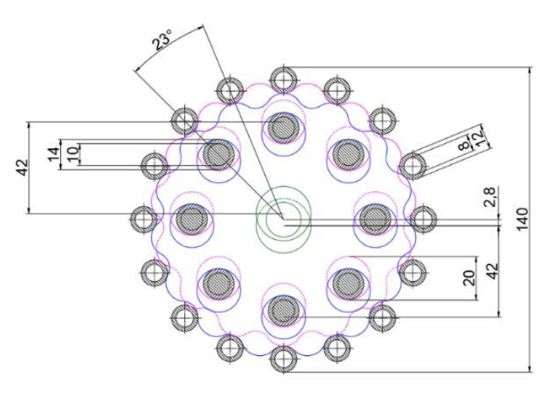

Cycloidal Drive Gearbox (WIP)

This page is still a work in progress. I’m documenting the design, print, and test steps for a compact cycloidal drive focused on backlash and print-friendly tolerances. Check back soon!
This page is still a work in progress. I’m documenting the design, print, and test steps for a compact cycloidal drive focused on backlash and print-friendly tolerances. Check back soon!